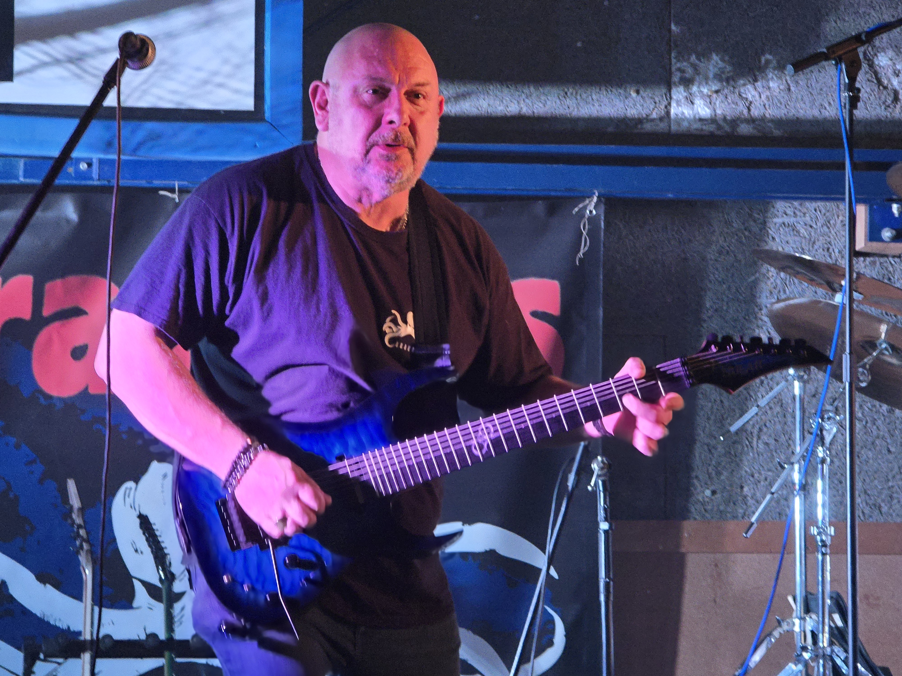

Né Philippe le 21 décembre 1966 à Chambéry, Phil découvre la guitare à 16 ans — et ne la lâchera plus. Dès la fin des années 80, il s'impose comme guitariste soliste au sein de Nerve of Steels, puis devient l'architecte du groupe Ozone, où il cumule les rôles de soliste et compositeur. Au début des années 90, il fonde Saphyr, groupe dans lequel il est seul aux guitares et signe toutes les compositions. Ses influences de l'époque dessinent déjà un paysage sonore ambitieux : de Kiss et Alice Cooper jusqu'à Iron Maiden et Motörhead. Son arsenal ? Une Les Paul Gibson branchée dans un Marshall JCM 800 3 corps tête à transistor — un son tranchant, sans compromis.
Au début des années 2000, Saphyr tire sa révérence. Mais Phil ne reste jamais longtemps les mains vides. De 2005 à 2018, il relance l'aventure sous le nom Saphyr Deuce, mêlant reprises rock et hard rock à de nouvelles compositions. Sa palette évolue : il délaisse les amplis au profit des processeurs Line 6, et ses guitares migrent vers des superstrats signées Charvel, Jackson et Schecter, équipées de vibrato Floyd Rose. Son oreille, elle, s'ouvre de plus en plus vers le power metal et les nouveaux territoires du metal.
En février 2022, Phil rejoint Les Krakens comme guitariste soliste. Dès lors, il devient le moteur de l'évolution du groupe : sous son influence, les Krakens s'orientent progressivement vers un metal de plus en plus affirmé, nourri de compositions originales. Phil explore désormais les guitares 7 et 8 cordes, repoussant encore les frontières d'un son qui n'a pas fini de grandir.
Repères
Born Philippe on December 21, 1966 in Chambéry, Phil picked up the guitar at 16 — and never put it down. By the late 1980s, he had established himself as lead guitarist of Nerve of Steels, before becoming the driving force behind Ozone. In the early 90s, he founded Saphyr, writing all the material himself. His influences already painted an ambitious sonic landscape — from Kiss and Alice Cooper to Iron Maiden and Motörhead. His weapon of choice: a Gibson Les Paul through a Marshall JCM 800 — sharp, uncompromising tone.
From 2005 to 2018, he relaunched under the name Saphyr Deuce, blending rock and hard rock covers with original compositions. His setup evolved: Line 6 processors, superstrats from Charvel, Jackson and Schecter with Floyd Rose systems. His ear opened increasingly toward power metal.
In February 2022, Phil joined Les Krakens as lead guitarist. From that point on, he became the engine of the band's evolution — under his influence, the Krakens moved steadily toward a heavier, more original sound. Phil now explores 7- and 8-string guitars, pushing the boundaries further.
Timeline